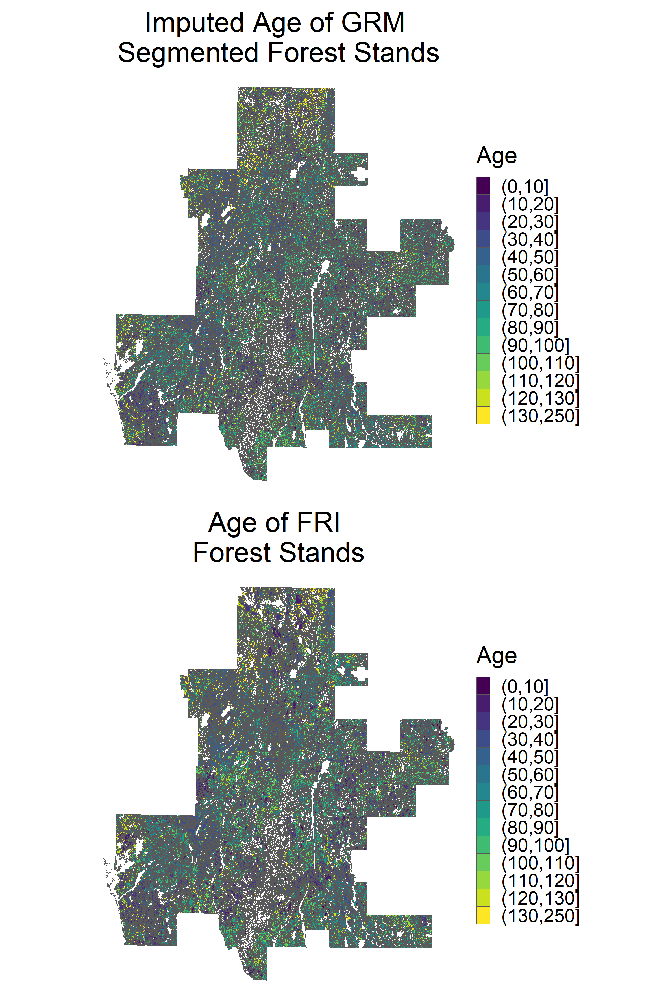
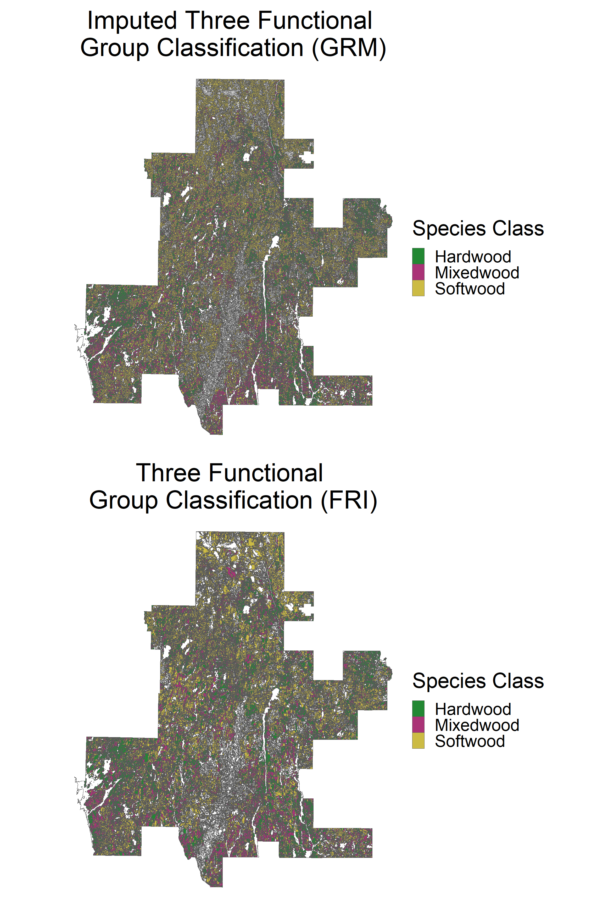
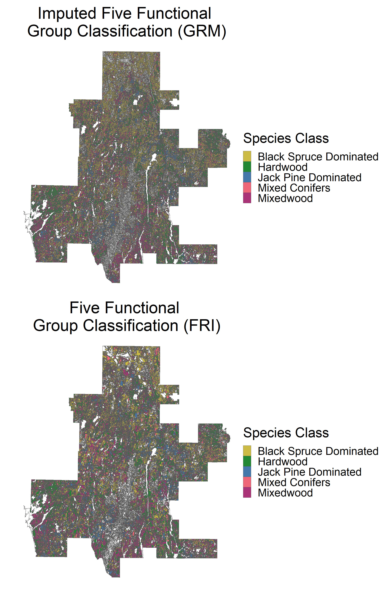
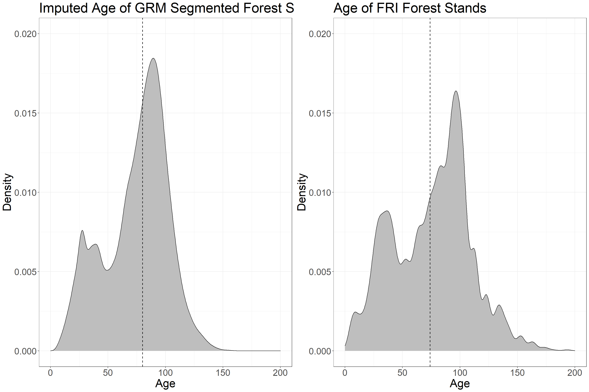
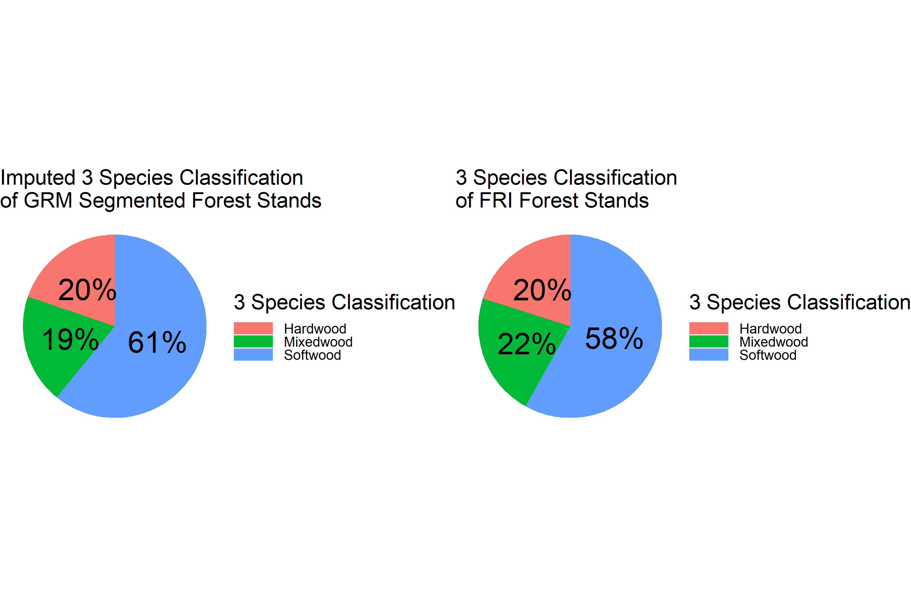
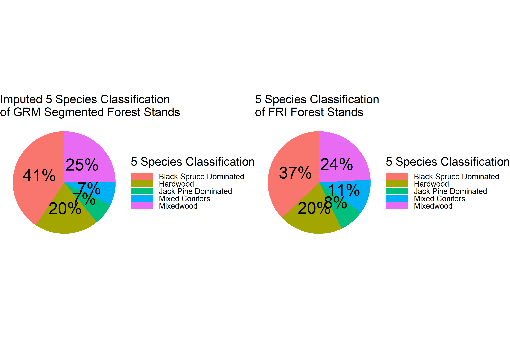

Imputation
Intro
This page provides an example of the imputation approach used to estimate age and species composition in newly-generated forest stands. The imputation is based on a k-nearest neighbor (kNN) algorithm. X-variables (variables that are contiguous across reference and target polygons) are identified and for each Generic Region Merging (GRM) generated forest polygon (the target polygon), the k-nearest neighbor FRI polygons (the reference polygons) that minimize the Euclidean distance of the X-variables are identified and used to impute age and species composition into the target polygon. If k = 1, the age and species variables are imputed directly from the best matching reference polygon. If k > 1, age is imputed as the mean age of kNN polygons and species variables are imputed as the mode across kNN polygons. The basic workflow is as follows:
- Run GRM Segmentation to derive new polygon dataset (see previous posts)
- Extract LiDAR attributes in FRI polygons and GRM segmented polygons
- Screen FRI polygons to curate an optimal dataset to use for imputation
- Run imputation on FRI polygons ONLY to assess imputation performance
- Run imputation between FRI and GRM polygons to impute estimates of age and species composition
1. Extract LiDAR attributes in FRI polygons and GRM polygons
Before running imputation we need to extract LiDAR and Sentinel 2 attributes in all FRI and GRM polygons. For this example, we only extract attributes used in the optimal imputation model (listed below) as well as the attributes needed for polygon data screening in step 2 of this walk-through. The value extracted for each polygon is the median cell value, weighted by the fraction of each cell that is covered by the polygon.
The variables used in the imputation algorithm are as follows, and were selected with guidance from previous works as well as a performance analysis (the details of which will be disclosed in a forthcoming journal article):
- avg: mean returns height > 1.3 m classified as vegetation
- sd: standard deviation of returns height > 1.3 m classified as vegetation
- rumple: ratio of canopy outer surface area to ground surface area
- zpcum8: cumulative percentage of LiDAR returns found in 80% percentile of LiDAR height
- x and y: coordinates of polygon centroid (in UTM coordinates)
- red_edge_2: Sentinel 2 surface reflectance band 6 (740 nm)
The following two variables are needed for polygon data screening:
- p95: 95th percentile of LiDAR height returns > 1.3 m classified as vegetation
- cc: percent of first returns > 2 meters (canopy cover)
1a. Extract attributes in FRI polygons
# load packages
library(terra)
library(tidyverse)
library(exactextractr)
library(sf)
library(magrittr)
library(gridExtra)
# load FRI polygons
poly <- vect('D:/ontario_inventory/romeo/RMF_EFI_layers/Polygons Inventory/RMF_PolygonForest.shp')
# convert to df
dat_fri <- as.data.frame(poly)
# cbind centroids to dat
dat_fri <- cbind(dat_fri, centroids(poly) %>% crds)
# load LiDAR datasets we need to extract over polygons
# create named vector with variable names and data links
lidar <- c('p95' = 'D:/ontario_inventory/romeo/RMF_EFI_layers/SPL100 metrics/RMF_20m_T130cm_p95.tif',
'sd' = 'D:/ontario_inventory/romeo/SPL metrics/Z_METRICS_MOSAIC/individual/RMF_Z_METRICS_MOSAIC_zsd.tif',
'rumple' = 'D:/ontario_inventory/romeo/SPL metrics/Z_METRICS_MOSAIC/individual/RMF_RUMPLE_MOSAIC_r_rumple.tif',
'zpcum8' = 'D:/ontario_inventory/romeo/SPL metrics/Z_METRICS_MOSAIC/individual/RMF_Z_METRICS_MOSAIC_zpcum8.tif',
'avg' = 'D:/ontario_inventory/romeo/RMF_EFI_layers/SPL100 metrics/RMF_20m_T130cm_avg.tif',
'red_edge_2' = 'D:/ontario_inventory/romeo/Sentinel/red_edge_2.tif',
'cc' = 'D:/ontario_inventory/romeo/RMF_EFI_layers/SPL100 metrics/RMF_20m_T130cm_2m_cov.tif')
# loop through LiDAR attributes to extract values
for (i in seq_along(lidar)) {
# load LiDAR rasters as raster stack
lidar_ras <- rast(lidar[i])
# project poly to crs of raster
poly_ras <- project(poly, lidar_ras)
# convert to sf
poly_ras <- st_as_sf(poly_ras)
#extract median values
vec <-
exact_extract(lidar_ras, poly_ras, 'median')
# aggregate into data frame
if(i == 1){
vec_df <- as.data.frame(vec)
} else{
vec_df <- cbind(vec_df, as.data.frame(vec))
}
}
# change column names of extracted attribute data frame
colnames(vec_df) <- names(lidar)
# add LiDAR attributes to FRI polygon data frame
dat_fri <- cbind(dat_fri, vec_df)
# add 2018 age values
dat_fri$AGE2018 <- 2018 - dat_fri$YRORG
# save extracted dataframe for fast rebooting
save(dat_fri, file = 'D:/ontario_inventory/imputation/example/dat_fri_extr.RData')1b. Extract attributes in GRM segmented polygons
# load GRM segmented polygons
poly <- vect('D:/ontario_inventory/segmentation/grm/shp/grm_10_01_05.shp')
# convert to df
dat_grm <- as.data.frame(poly)
# cbind centroids to dat
dat_grm <- cbind(dat_grm, centroids(poly) %>% crds)
# remove p95 and cc as we'll re-calculate here for consistency
dat_grm %<>% select(-c(p95, cc))
# load LiDAR datasets we need to extract over polygons
# create named vector with variable names and data links
lidar <- c('p95' = 'D:/ontario_inventory/romeo/RMF_EFI_layers/SPL100 metrics/RMF_20m_T130cm_p95.tif',
'sd' = 'D:/ontario_inventory/romeo/SPL metrics/Z_METRICS_MOSAIC/individual/RMF_Z_METRICS_MOSAIC_zsd.tif',
'rumple' = 'D:/ontario_inventory/romeo/SPL metrics/Z_METRICS_MOSAIC/individual/RMF_RUMPLE_MOSAIC_r_rumple.tif',
'zpcum8' = 'D:/ontario_inventory/romeo/SPL metrics/Z_METRICS_MOSAIC/individual/RMF_Z_METRICS_MOSAIC_zpcum8.tif',
'avg' = 'D:/ontario_inventory/romeo/RMF_EFI_layers/SPL100 metrics/RMF_20m_T130cm_avg.tif',
'red_edge_2' = 'D:/ontario_inventory/romeo/Sentinel/red_edge_2.tif',
'cc' = 'D:/ontario_inventory/romeo/RMF_EFI_layers/SPL100 metrics/RMF_20m_T130cm_2m_cov.tif')
# loop through LiDAR attributes to extract values
for (i in seq_along(lidar)) {
# load LiDAR rasters as raster stack
lidar_ras <- rast(lidar[i])
# project poly to crs of raster
poly_ras <- project(poly, lidar_ras)
# convert to sf
poly_ras <- st_as_sf(poly_ras)
#extract median values
vec <-
exact_extract(lidar_ras, poly_ras, 'median')
# aggregate into data frame
if(i == 1){
vec_df <- as.data.frame(vec)
} else{
vec_df <- cbind(vec_df, as.data.frame(vec))
}
}
# change column names of extracted attribute data frame
colnames(vec_df) <- names(lidar)
# add LiDAR attributes to FRI polygon data frame
dat_grm <- cbind(dat_grm, vec_df)
# save extracted data frame for fast rebooting
save(dat_grm, file = 'D:/ontario_inventory/imputation/example/grm_10_01_05_extr.RData')
# clear workspace
rm(list=ls())2. Screen FRI polygons to curate an optimal dataset to use for imputation
In order to ensure the best possible imputation results, it is important to screen the FRI dataset and remove polygons that do not fit certain data quality criteria, or are not representative of forest stands.
The current criteria being used are:
- POLYTYPE == ‘FOR’
- polygon >= 50% forested landcover
- p95 >= 5 meters (broad definition of ‘forest’)
- Canopy cover >= 50%
# load FRI polygons
poly <- vect('D:/ontario_inventory/romeo/RMF_EFI_layers/Polygons Inventory/RMF_PolygonForest.shp')
# load FRI polygon data frame
load('D:/ontario_inventory/imputation/example/dat_fri_extr.RData')
##################################
### SCREEN FOR POLYTYPE == FOR ###
##################################
# filter POLYTYPE == 'FOR'
dat_fri <- filter(dat_fri, POLYTYPE == 'FOR')
poly_fri <- poly[poly$POLYTYPE == 'FOR']
####################################################
### SCREEN FOR POLYGON >= 50% FORESTED LANDCOVER ###
####################################################
# load VLCE 2.0 landcover dataset from 2018
lc <- rast('D:/ontario_inventory/VLCE/CA_forest_VLCE2_2018_CLIPPED.tif')
# project poly to crs of raster
poly_lc <- project(poly_fri, lc)
# convert to sf
poly_lcsf <- st_as_sf(poly_lc)
# extract landcover values
lc_poly <- exact_extract(lc, poly_lcsf)
# set landcover class key with single forested class
lc_key_for <- c(`20` = 'Water',
`31` = 'Snow/Ice',
`32` = 'Rock/Rubble',
`33` = 'Exposed/Barren Land',
`40` = 'Bryoids',
`50` = 'Shrubland',
`80` = 'Wetland',
`81` = 'Forest',
`100` = 'Herbs',
`210` = 'Forest',
`220` = 'Forest',
`230` = 'Forest')
# find polygons with forest at least 50% of pixels
# apply over list
lc_dom_for <- sapply(lc_poly, function(x){
x$value <- recode(x$value, !!!lc_key_for)
x <- x %>% group_by(value) %>% summarize(sum = sum(coverage_fraction))
m <- x$value[which(x$sum == max(x$sum))]
if((length(m) == 1) & (m == 'Forest')[1]){
if(x$sum[x$value == m]/sum(x$sum) >= 0.5){
return('Yes')
}else{return('No')}
}else{return('No')}
})
# add into FRI data frame
dat_fri <- dat_fri %>% add_column(dom_for = lc_dom_for)
# subset FRI data frame based on whether polygon dominated by forest
dat_dom_for <- dat_fri[dat_fri$dom_for == 'Yes',]
##################################
### SCREEN FOR P95 >= 5 METERS ###
##################################
# subset FRI data frame
dat_p95 <- dat_fri[dat_fri$p95 >= 5,]
############################
### SCREEN FOR CC >= 50% ###
############################
# subset FRI data frame
dat_cc <- dat_fri[dat_fri$cc >= 50,]
############################################
### COMBINE INTERSECTION OF DATA SCREENS ###
############################################
# first combine only by POLYID
dat_fri_scr <- intersect(dat_dom_for %>% subset(select = POLYID),
dat_p95 %>% subset(select = POLYID)) %>%
intersect(., dat_cc %>% subset(select = POLYID))
# load full data frame attributes
dat_fri_scr <- dat_fri[dat_fri$POLYID %in% dat_fri_scr$POLYID,]
# save extracted data frame for fast rebooting
save(dat_fri_scr, file = 'D:/ontario_inventory/imputation/example/dat_fri_scr.RData')
# clear workspace
rm(list=ls())3. Run imputation on FRI polygons ONLY to assess imputation performance
The goal of this imputation procedure is to estimate age and species composition in GRM segmented forest polygons. But it is also important to assess the performance of the algorithm. To do this, we can conduct the imputation over the FRI dataset ONLY. For each FRI polygon, we find the k-nearest neighbors, and calculate the age and species composition attributes to impute. We can then compare the observed age and species composition of the polygon to the imputed values. Note we have to do this calculation on the FRI dataset alone because we do not have observed age and species composition values for the GRM segmented polygons. Also note that ALL attributes are imputed from the same k-nearest neighbors. The algorithm is not run for individual attributes.
For age, we report root mean squared difference (RMSD), mean absolute error (MAE) and mean bias error (MBE). RMSD is used for assess results for model comparison. MAE gives an average error of imputed age in years. MBE gives an indication of whether we are imputing younger or older ages on average.
For species composition, we report the percent of observed and imputed values that match (accuracy). Species composition is broken down into several distinct attributes:
- Working group
- First leading species (from FRI SPCOMP attribute)
- Second leading species (from FRI SPCOMP attribute)
- Three functional group classification (softwood, mixedwood, hardwood) derived from SPCOMP
- Five functional group classification (jack pine dominated, black spruce dominated, mixed conifer, mixedwood, hardwood) derived from SPCOMP
We also calculate performance metrics on the X-variables used in imputation: relative RMSD (RRMSD) and relative MBE (RMBE), calculated by dividing RMSD and RMBE by the mean value of each variable and multiplying by 100. RRMSD and RMBE give a percent error that can be compared across variables and when variables have difficult to interpret units, such as several of the ALS metrics used in imputation.
3a. Create functions needed
######################################################
### FUNCTIONS TO RUN K NEAREST NEIGHBOR IMPUTATION ###
######################################################
# load packages
library(RANN)
library(reshape2)
# create mode function
getmode <- function(v) {
uniqv <- unique(v)
uniqv[which.max(tabulate(match(v, uniqv)))]
}
# create rmsd function
rmsd <- function(obs, est){
sqrt(mean((est - obs) ^ 2))
}
# create rrmsd function
rrmsd <- function(obs, est){
sqrt(mean((est - obs) ^ 2)) / mean(obs) * 100
}
# create mae function
mae <- function(obs, est){
mean(abs(est - obs))
}
# create mbe function
mbe <- function(obs, est){
mean(est - obs)
}
# create rmbe function
rmbe <- function(obs, est){
mean(est - obs) / mean(obs) * 100
}
# create knn function
run_knn_fri <- function(dat, vars, k) {
# subset data
dat_nn <- dat %>% select(all_of(vars))
# scale for nn computation
dat_nn_scaled <- dat_nn %>% scale
# run nearest neighbor
nn <- nn2(dat_nn_scaled, dat_nn_scaled, k = k + 1)
# get nn indices
nni <- nn[[1]][, 2:(k + 1)]
# add vars to tibble
# take mean/mode if k > 1
if(k > 1){
for(i in seq_along(vars)){
if(i == 1){
nn_tab <- tibble(!!vars[i] := dat_nn[,i],
!!str_c(vars[i], '_nn') := apply(nni, MARGIN = 1, FUN = function(x){
mean(dat_nn[x, i])
}))
}else{
nn_tab %<>% mutate(!!vars[i] := dat_nn[,i],
!!str_c(vars[i], '_nn') := apply(nni, MARGIN = 1, FUN = function(x){
mean(dat_nn[x, i])
}))
}
}
# add target vars to tibble
nn_tab %<>% mutate(age = dat$AGE2018,
wg = dat$WG,
sp1 = dat$SP1,
sp2 = dat$SP2,
group5 = dat$SpeciesGroup2,
group3 = dat$SpeciesGroup3,
age_nn = apply(nni, MARGIN = 1, FUN = function(x){
mean(dat$AGE2018[x])
}),
wg_nn = apply(nni, MARGIN = 1, FUN = function(x){
getmode(dat$WG[x])
}),
sp1_nn = apply(nni, MARGIN = 1, FUN = function(x){
getmode(dat$SP1[x])
}),
sp2_nn = apply(nni, MARGIN = 1, FUN = function(x){
getmode(dat$SP2[x])
}),
group5_nn = apply(nni, MARGIN = 1, FUN = function(x){
getmode(dat$SpeciesGroup2[x])
}),
group3_nn = apply(nni, MARGIN = 1, FUN = function(x){
getmode(dat$SpeciesGroup3[x])
}))
}
# take direct nn if k == 1
if(k == 1){
for(i in seq_along(vars)){
if(i == 1){
nn_tab <- tibble(!!vars[i] := dat_nn[,i],
!!str_c(vars[i], '_nn') := dat_nn[nn[[1]][,2],i])
}else{
nn_tab %<>% mutate(!!vars[i] := dat_nn[,i],
!!str_c(vars[i], '_nn') := dat_nn[nn[[1]][,2],i])
}
}
# add target vars to tibble
nn_tab %<>% mutate(age = dat$AGE2018,
wg = dat$WG,
sp1 = dat$SP1,
sp2 = dat$SP2,
group5 = dat$SpeciesGroup2,
group3 = dat$SpeciesGroup3,
age_nn = dat$AGE2018[nn[[1]][,2]],
wg_nn = dat$WG[nn[[1]][,2]],
sp1_nn = dat$SP1[nn[[1]][,2]],
sp2_nn = dat$SP2[nn[[1]][,2]],
group5_nn = dat$SpeciesGroup2[nn[[1]][,2]],
group3_nn = dat$SpeciesGroup3[nn[[1]][,2]])
}
# calculate fit metrics for vars
for(i in seq_along(vars)){
if(i == 1){
perform_df <- tibble(variable = vars[i],
metric = c('rrmsd (%)', 'rmbe (%)'),
value = c(rrmsd(pull(nn_tab, vars[i]),
pull(nn_tab, str_c(vars[i], '_nn'))),
rmbe(pull(nn_tab, vars[i]),
pull(nn_tab, str_c(vars[i], '_nn')))))
}else{
perform_df %<>% add_row(variable = vars[i],
metric = c('rrmsd (%)', 'rmbe (%)'),
value = c(rrmsd(pull(nn_tab, vars[i]),
pull(nn_tab, str_c(vars[i], '_nn'))),
rmbe(pull(nn_tab, vars[i]),
pull(nn_tab, str_c(vars[i], '_nn')))))
}
}
# calculate metrics for age
perform_df %<>% add_row(variable = 'age',
metric = c('rmsd (yrs)', 'mbe (yrs)', 'mae (yrs)'),
value = c(rmsd(nn_tab$age, nn_tab$age_nn),
mbe(nn_tab$age, nn_tab$age_nn),
mae(nn_tab$age, nn_tab$age_nn)))
# calculate wg accuracy
# create df of WG
wg <- data.frame(obs = nn_tab$wg,
est = nn_tab$wg_nn)
# create column of match or not
wg$match <- wg$obs == wg$est
# add total percent of matching WG to perform_df
perform_df %<>% add_row(variable = 'working group',
metric = 'accuracy (%)',
value = NROW(wg[wg$match == T,]) /
NROW(wg) * 100)
# calculate SP1 accuracy
# create df of SP1
sp1 <- data.frame(obs = nn_tab$sp1,
est = nn_tab$sp1_nn)
# create column of match or not
sp1$match <- sp1$obs == sp1$est
# add total percent of matching SP1 to perform_df
perform_df %<>% add_row(variable = 'leading species',
metric = 'accuracy (%)',
value = NROW(sp1[sp1$match == T,]) /
NROW(sp1) * 100)
# calculate SP2 accuracy
# create df of SP2
sp2 <- data.frame(obs = nn_tab$sp2,
est = nn_tab$sp2_nn)
# create column of match or not
sp2$match <- sp2$obs == sp2$est
# add total percent of matching SP2 to perform_df
perform_df %<>% add_row(variable = 'second species',
metric = 'accuracy (%)',
value = NROW(sp2[sp2$match == T,]) /
NROW(sp2) * 100)
# calculate GROUP3 accuracy
# create df of GROUP3
group3 <- data.frame(obs = nn_tab$group3,
est = nn_tab$group3_nn)
# create column of match or not
group3$match <- group3$obs == group3$est
# add total percent of matching group3 to perform_df
perform_df %<>% add_row(variable = 'three func group class',
metric = 'accuracy (%)',
value = NROW(group3[group3$match == T,]) /
NROW(group3) * 100)
# calculate GROUP5 accuracy
# create df of GROUP5
group5 <- data.frame(obs = nn_tab$group5,
est = nn_tab$group5_nn)
# create column of match or not
group5$match <- group5$obs == group5$est
# add total percent of matching group5 to perform_df
perform_df %<>% add_row(variable = 'five func group class',
metric = 'accuracy (%)',
value = NROW(group5[group5$match == T,]) /
NROW(group5) * 100)
# return df
return(perform_df)
}3b. Run the imputation and assess performance
###########################
### LOAD FRI DATA FRAME ###
###########################
# load from part 2 above
load('D:/ontario_inventory/imputation/example/dat_fri_scr.RData')
# subset only the attributes we need
dat_fri_scr %<>% select(POLYID, AGE2018, SPCOMP, WG,
avg, sd,
rumple, zpcum8,
x, y, red_edge_2)
# remove any polygons with missing values
dat_fri_scr <- na.omit(dat_fri_scr)
###########################################
### CALCULATE AND ADD SPCOMP ATTRIBUTES ###
###########################################
# parse SPCOMP strings
sp <- str_split(dat_fri_scr$SPCOMP, pattern = "\\s{2}")
# add first species to dat
dat_fri_scr$SP1 <- sapply(sp, FUN = function(x){
str <- x[1]
str <- str_sub(str, start = 1, end = 2)
return(str)
})
# add first species percent to dat
dat_fri_scr$SP1P <- sapply(sp, FUN = function(x){
str <- x[2]
if(is.na(str)){
str <- 100
} else{
str <- str_sub(str, start = 1, end = 2)
}
return(str)
})
# add second species to dat
dat_fri_scr$SP2 <- sapply(sp, FUN = function(x){
str <- x[2]
if(is.na(str) == F){
str <- str_sub(str, start = 3, end = 4)
}
return(str)
})
# add second species percent to dat
dat_fri_scr$SP2P <- sapply(sp, FUN = function(x){
str <- x[3]
if(is.na(str) == F){
str <- str_sub(str, start = 1, end = 2)
}
return(str)
})
# change second species missing values
dat_fri_scr$SP2[is.na(dat_fri_scr$SP2)] <- 'MIS'
dat_fri_scr$SP2P[is.na(dat_fri_scr$SP2P)] <- 0
# load species group data -- calculated in separate code (can provide details)
sp_group <- read.csv(
'D:/ontario_inventory/romeo/RMF_EFI_layers/Polygons Inventory/RMF_PolygonForest_SPGROUP.shp'
)
# change POLYID to numeric
dat_fri_scr %<>% mutate(POLYID = as.numeric(POLYID))
sp_group %<>% mutate(POLYID = as.numeric(POLYID))
# join to dat
dat_fri_scr <- left_join(dat_fri_scr,
sp_group %>% select(POLYID, SpeciesGroup2, SpeciesGroup3),
by = 'POLYID')
#############################################
### RUN NEAREST NEIGHBOR IMPUTATION K = 5 ###
#############################################
# create vector of X-variables for imputation
vars <- c('avg', 'sd', 'rumple',
'zpcum8', 'x',
'y', 'red_edge_2')
# run_knn function already created
perf <- run_knn_fri(dat_fri_scr, vars, k = 5)
# round values
perf %<>% mutate(value = round(value, 2))
# factor variable and metric categories to order
perf %<>% mutate(variable = factor(variable, levels = c('age', 'working group','leading species',
'second species', 'three func group class',
'five func group class', vars))) %>%
mutate(metric = factor(metric, levels = c('rmsd (yrs)', 'mbe (yrs)', 'mae (yrs)', 'accuracy (%)', 'rrmsd (%)', 'rmbe (%)')))
# cast df
perf_cast <- dcast(perf, variable ~ metric)
# remove x and y
perf_cast %<>% filter(!(variable %in% c('x', 'y')))
# set NA to blank
perf_cast[is.na(perf_cast)] <- ''
# display results
knitr::kable(perf_cast, caption = "Imputation Performance of FRI Forest Stand Polygons", label = NA)| variable | rmsd (yrs) | mbe (yrs) | mae (yrs) | accuracy (%) | rrmsd (%) | rmbe (%) |
|---|---|---|---|---|---|---|
| age | 23.31 | -0.14 | 16.06 | |||
| working group | 66.77 | |||||
| leading species | 65.46 | |||||
| second species | 34.05 | |||||
| three func group class | 72.34 | |||||
| five func group class | 60.73 | |||||
| avg | 3.6 | 0 | ||||
| sd | 3.88 | -0.33 | ||||
| rumple | 2.54 | 0.01 | ||||
| zpcum8 | 0.9 | 0.13 | ||||
| red_edge_2 | 2.15 | -0.1 |
The mean bias error (MBE) of age is -0.14 years, indicating the imputed estimates of age are not skewed toward younger or older values. The mean absolute error (MAE) of age is 16.06 years, which is the average difference between the observed and imputed value.
Accuracy of leading species classification is 65.46%, and a much lower 34.05% for second leading species. Three and five functional group classification have respective accuracies of 72.34% and 60.73%.
Relative root mean squared difference (RRMSD) of the imputation attributes (avg, sd, rumple, zpcum8, and red_edge_2) is below 4% for all attributes. These are low values, which demonstrate that the imputation algorithm is finding optimal matches within the database of available FRI polygons.
Relative mean bias error (RMBE) of the imputation attributes is close to 0%, meaning that the nearest neighbor selections are not skewed toward positive or negative values of these attributes.
RRMSD/RMBE are not calculated for x and y because the coordinates do not represent a value scale.
4. Run imputation between FRI and GRM polygons to derive estimates of age and species composition
The last step is to run the imputation between the screened FRI polygons and the GRM segmented polygons. For each GRM segmented polygon, the k-nearest neighbors in the FRI data are found and used to impute age and species composition. Note we do not conduct imputation on all the GRM segmented polygons, but only the polygons that have >= 50% forested landcover, p95 >= 5 meters, and canopy cover >= 50% (same criteria as FRI data screening conducted above in step 2).
Although we cannot directly assess the error of age and species composition when imputing into the GRM segmented polygons, we can still assess the fit of the variables used in the imputation.
We can also review maps and distributions comparing FRI age/species composition against the same attributes imputed into GRM segmented polygons.
# load additional packages
library(viridis)
library(scales)
library(janitor)
# load GRM polygon data frame
load('D:/ontario_inventory/imputation/example/grm_10_01_05_extr.RData')
# screen for forested polygons
dat_grm_scr <- dat_grm %>% filter(dom_for == 'Yes',
p95 >= 5,
cc >= 50)
# create data frame for grm and fri metrics used in imputation
dat_grm_imp <- dat_grm_scr %>% select(id, avg, sd,
rumple, zpcum8,
x, y, red_edge_2) %>% na.omit
dat_fri_imp <- dat_fri_scr %>% select(avg, sd,
rumple, zpcum8,
x, y, red_edge_2) %>% na.omit
# need to combine and scale all values together then separate again
dat_comb_scaled <- rbind(dat_grm_imp %>% select(-id),
dat_fri_imp) %>% scale
dat_grm_scaled <- dat_comb_scaled[1:NROW(dat_grm_imp),]
dat_fri_scaled <- dat_comb_scaled[(NROW(dat_grm_imp)+1):(NROW(dat_grm_imp)+NROW(dat_fri_imp)),]
# run nearest neighbor imputation k = 5
nn <- nn2(dat_fri_scaled, dat_grm_scaled, k = 5)
# get nn indices
nni <- nn[[1]]
# add imputed attributes into GRM imputation data frame
for(i in seq_along(vars)){
dat_grm_imp %<>% add_column(
!!str_c(vars[i], '_imp') := apply(
nni,
MARGIN = 1,
FUN = function(x){
mean(dat_fri_imp[x, vars[i]])
}
))
}
# create vector of target variables
tar_vars <- c('AGE2018', 'WG', 'SP1', 'SP2',
'SpeciesGroup3', 'SpeciesGroup2')
# add age and species variables to GRM data frame
for(i in seq_along(tar_vars)){
if(i == 'AGE2018'){
dat_grm_imp %<>% add_column(
!!tar_vars[i] := apply(
nni,
MARGIN = 1,
FUN = function(x){
mean(dat_fri_scr[x, tar_vars[i]])
}
))
} else{
dat_grm_imp %<>% add_column(
!!tar_vars[i] := apply(
nni,
MARGIN = 1,
FUN = function(x){
getmode(dat_fri_scr[x, tar_vars[i]])
}
))
}
}
# update colnames
dat_grm_imp %<>% rename(age = AGE2018,
class3 = SpeciesGroup3,
class5 = SpeciesGroup2)
# add values back into main GRM data frame (missing values for polygons not
# included in the imputation)
dat_grm <- left_join(dat_grm, dat_grm_imp)
# calculate performance across imputation attributes
for(i in seq_along(vars)){
if(i == 1){
perf <- tibble(variable = vars[i],
metric = c('rrmsd (%)', 'rmbe (%)'),
value = c(rrmsd(dat_grm_imp[, vars[i]],
dat_grm_imp[, str_c(vars[i], '_imp')]),
rmbe(dat_grm_imp[, vars[i]],
dat_grm_imp[, str_c(vars[i], '_imp')])))
}else{
perf %<>% add_row(variable = vars[i],
metric = c('rrmsd (%)', 'rmbe (%)'),
value = c(rrmsd(dat_grm_imp[, vars[i]],
dat_grm_imp[, str_c(vars[i], '_imp')]),
rmbe(dat_grm_imp[, vars[i]],
dat_grm_imp[, str_c(vars[i], '_imp')])))
}
}
# round to two decimal places
perf %<>% mutate(value = round(value, 2))
# factor so table displays nicely
perf %<>% mutate(variable = factor(variable, levels = vars)) %>%
mutate(metric = factor(metric, levels = c('rrmsd (%)', 'rmbe (%)')))
# cast df
perf_cast <- dcast(perf, variable ~ metric)
# remove x and y
perf_cast %<>% filter(!(variable %in% c('x', 'y')))
# display results of imputation rmsd
knitr::kable(perf_cast, caption = "Imputation Performance between FRI and GRM Forest Stand Polygons", label = NA)| variable | rrmsd (%) | rmbe (%) |
|---|---|---|
| avg | 3.82 | 0.05 |
| sd | 4.05 | -0.46 |
| rumple | 2.65 | 0.11 |
| zpcum8 | 0.86 | 0.12 |
| red_edge_2 | 2.09 | -0.12 |
The RRMSD results are again all below ~4% and RMBE does not show bias toward negative of positive difference.
4a. Figures of Forest Stand Age
# load GRM polygons
poly_grm <- vect('D:/ontario_inventory/segmentation/grm/shp/grm_10_01_05.shp')
# add new data frame to polygons
values(poly_grm) <- dat_grm
# save grm polygon output
writeVector(poly_grm, 'D:/ontario_inventory/imputation/example/grm_10_01_05_imp.shp', overwrite = T)
# load FRI polygons
poly_fri <- vect('D:/ontario_inventory/romeo/RMF_EFI_layers/Polygons Inventory/RMF_PolygonForest.shp')
# set age == 0 to NA
poly_fri$AGE[poly_fri$AGE == 0] <- NA
# load species group data -- calculated in separate code (can provide details)
sp_group <- read.csv(
'D:/ontario_inventory/romeo/RMF_EFI_layers/Polygons Inventory/RMF_PolygonForest_SPGROUP.shp'
)
# load poly_fri dataframe
dat_fri <- as.data.frame(poly_fri)
# change POLYID to numeric
dat_fri %<>% mutate(POLYID = as.numeric(POLYID))
sp_group %<>% mutate(POLYID = as.numeric(POLYID))
# rename species groups
sp_group %<>% rename(class3 = SpeciesGroup3, class5 = SpeciesGroup2)
# join to dat
dat_fri <- left_join(dat_fri,
sp_group %>% select(POLYID, class3, class5),
by = 'POLYID')
# update age to 2018
dat_fri$AGE2018 <- 2018 - dat_fri$YRORG
# re-input attributes into FRI polygons
values(poly_fri) <- dat_fri
rm(dat_fri)
# since we only have values of age and species comp for dom_fom == yes
# and p95 >= 5 m we should only compare the screened FRI polygons that
# contain those same attributes
poly_fri$AGE2018[!(poly_fri$POLYID %in% dat_fri_scr$POLYID)] <- NA
poly_fri$class3[!(poly_fri$POLYID %in% dat_fri_scr$POLYID)] <- NA
poly_fri$class5[!(poly_fri$POLYID %in% dat_fri_scr$POLYID)] <- NA
# create df to plot age
grm_sf <- st_as_sf(poly_grm)
fri_sf <- st_as_sf(poly_fri)
# cut dfs
grm_sf %<>% mutate(age_cut = cut(age, breaks = c(seq(0, 130, 10), 250)))
fri_sf %<>% mutate(age_cut = cut(AGE2018, breaks = c(seq(0, 130, 10), 250)))
# plot age
p1 <- ggplot(grm_sf) +
geom_sf(mapping = aes(fill = age_cut), linewidth = 0.05) +
coord_sf() +
scale_fill_manual(values = viridis(14), name = 'Age', na.translate = F) +
theme_void(base_size = 30) +
ggtitle('Imputed Age of GRM \nSegmented Forest Stands') +
theme(plot.title = element_text(hjust = 0.5))
p2 <- ggplot(fri_sf) +
geom_sf(mapping = aes(fill = age_cut), linewidth = 0.05) +
coord_sf() +
scale_fill_manual(values = viridis(14), name = 'Age', na.translate = F) +
theme_void(base_size = 30) +
ggtitle('Age of FRI \nForest Stands') +
theme(plot.title = element_text(hjust = 0.5))
grid.arrange(p1, p2, ncol = 1) Imputed age values show a similar spatial distribution to observed age values at a broad scale. Of course, the values should be scrutinized on a fine scale in specific areas. This task is much easier to do in a GIS software using the output shapefiles.
4b. Figures of Three Functional Group Classification
# plot three func group classification
p1 <- ggplot(grm_sf) +
geom_sf(mapping = aes(fill = class3), linewidth = 0.05) +
coord_sf() +
scale_fill_manual(values = c('#228833', '#aa3377', '#ccbb44'),
name = 'Species Class', na.translate = F) +
theme_void(base_size = 30) +
ggtitle('Imputed Three Functional \nGroup Classification (GRM)') +
theme(plot.title = element_text(hjust = 0.5))
p2 <- ggplot(fri_sf) +
geom_sf(mapping = aes(fill = class3), linewidth = 0.05) +
coord_sf() +
scale_fill_manual(values = c('#228833', '#aa3377', '#ccbb44'),
name = 'Species Class', na.translate = F) +
theme_void(base_size = 30) +
ggtitle('Three Functional \nGroup Classification (FRI)') +
theme(plot.title = element_text(hjust = 0.5))
grid.arrange(p1, p2, ncol = 1) We can also observe a similar distribution of species classes.
4c. Figures of Five Functional Group Classification
# plot five func group classification
p1 <- ggplot(grm_sf) +
geom_sf(mapping = aes(fill = class5), linewidth = 0.05) +
coord_sf() +
scale_fill_manual(values = c('#ccbb44', '#228833', '#4477aa',
'#ee6677', '#aa3377'),
name = 'Species Class', na.translate = F) +
theme_void(base_size = 30) +
ggtitle('Imputed Five Functional \nGroup Classification (GRM)') +
theme(plot.title = element_text(hjust = 0.5))
p2 <- ggplot(fri_sf) +
geom_sf(mapping = aes(fill = class5), linewidth = 0.05) +
coord_sf() +
scale_fill_manual(values = c('#ccbb44', '#228833', '#4477aa',
'#ee6677', '#aa3377'),
name = 'Species Class', na.translate = F) +
theme_void(base_size = 30) +
ggtitle('Five Functional \nGroup Classification (FRI)') +
theme(plot.title = element_text(hjust = 0.5))
grid.arrange(p1, p2, ncol = 1)
4d. Density Plots of Forest Stand Age
# density plots of age
p1 <- ggplot(dat_grm, aes(x = age)) +
geom_density(fill = 'grey') +
geom_vline(aes(xintercept = median(age, na.rm = T)),
linetype = "dashed",
size = 0.6) +
xlim(c(0,200)) +
ylim(c(0, 0.02)) +
theme_bw() +
xlab('Age') +
ylab('Density') +
ggtitle('Imputed Age of GRM Segmented Forest Stands') +
theme(text = element_text(size = 25),
plot.title = element_text(size=30))
p2 <- ggplot(as.data.frame(poly_fri), aes(x = AGE2018)) +
geom_density(fill = 'grey') +
geom_vline(aes(xintercept = median(AGE2018, na.rm = T)),
linetype = "dashed",
size = 0.6) +
xlim(c(0, 200)) +
ylim(c(0, 0.02)) +
theme_bw() +
xlab('Age') +
ylab('Density') +
ggtitle('Age of FRI Forest Stands') +
theme(text = element_text(size = 25),
plot.title = element_text(size=30))
grid.arrange(p1, p2, ncol = 1) The distribution of imputed age in GRM polygons closely matches that of observed age in FRI polygons. The median age values (dotted lines) are 78 (GRM) and 83 (FRI).
4e. Distribution of Three Functional Group Classification
# create data frame for GRM 3 classes
dat_grm_c3 <- dat_grm %>%
tabyl(class3) %>%
filter(is.na(class3) == F) %>%
arrange(desc(class3)) %>%
mutate(prop = n / sum(.$n)*100) %>%
mutate(ypos = cumsum(prop) - 0.5*prop) %>%
mutate(lbl = round(prop))
# create data frame for FRI 3 classes
dat_fri_c3 <- poly_fri %>% as.data.frame %>%
tabyl(class3) %>%
filter(is.na(class3) == F) %>%
arrange(desc(class3)) %>%
mutate(prop = n / sum(.$n)*100) %>%
mutate(ypos = cumsum(prop) - 0.5*prop) %>%
mutate(lbl = round(prop))
# plot
p1 <- ggplot(dat_grm_c3, aes(x = "", y = prop, fill = class3)) +
geom_bar(width = 1, stat = "identity") +
coord_polar("y", start = 0) +
theme_void() +
geom_text(aes(y = ypos, label = str_c(lbl, "%")), size = 15) +
theme(legend.title = element_text(size = 30),
legend.text = element_text(size = 20),
legend.key.width = unit(2, 'cm'),
plot.title = element_text(size=30)) +
scale_fill_manual(values = c('#228833', '#aa3377', '#ccbb44')) +
labs(fill = "") +
ggtitle("Imputed Three Functional \nGroup Classification (GRM)")
p2 <- ggplot(dat_fri_c3, aes(x = "", y = prop, fill = class3)) +
geom_bar(width = 1, stat = "identity") +
coord_polar("y", start = 0) +
theme_void() +
geom_text(aes(y = ypos, label = str_c(lbl, "%")), size = 15) +
theme(legend.title = element_text(size = 30),
legend.text = element_text(size = 20),
legend.key.width = unit(2, 'cm'),
plot.title = element_text(size=30)) +
scale_fill_manual(values = c('#228833', '#aa3377', '#ccbb44')) +
labs(fill = "") +
ggtitle("Three Functional Group \nClassification (FRI)")
grid.arrange(p1, p2, ncol = 2) The distribution of three functional groups is equal in the hardwood class (20%). The distribution of mixedwood and softwood is slightly different in the imputed values, with 3% more softwood, and thus 3% less mixedwood.
4f. Distribution of Five Functional Group Classification
# distribution of 5 species classes
# create data frame for GRM 5 classes
dat_grm_c5 <- dat_grm %>%
tabyl(class5) %>%
filter(is.na(class5) == F) %>%
arrange(desc(class5)) %>%
mutate(prop = n / sum(.$n)*100) %>%
mutate(ypos = cumsum(prop) - 0.5*prop) %>%
mutate(lbl = round(prop))
# create data frame for FRI 5 classes
dat_fri_c5 <- poly_fri %>% as.data.frame %>%
tabyl(class5) %>%
filter(is.na(class5) == F) %>%
arrange(desc(class5)) %>%
mutate(prop = n / sum(.$n)*100) %>%
mutate(ypos = cumsum(prop) - 0.5*prop) %>%
mutate(lbl = round(prop))
# plot
p1 <- ggplot(dat_grm_c5, aes(x = "", y = prop, fill = class5)) +
geom_bar(width = 1, stat = "identity") +
coord_polar("y", start = 0) +
theme_void() +
geom_text(aes(y = ypos, label = str_c(lbl, "%")), size = 15) +
theme(legend.title = element_text(size = 30),
legend.text = element_text(size = 20),
legend.key.width = unit(2, 'cm'),
plot.title = element_text(size=30)) +
scale_fill_manual(values = c('#ccbb44', '#228833', '#4477aa',
'#ee6677', '#aa3377')) +
labs(fill = "") +
ggtitle("Imputed Five Functional \nGroup Classification (GRM)")
p2 <- ggplot(dat_fri_c5, aes(x = "", y = prop, fill = class5)) +
geom_bar(width = 1, stat = "identity") +
coord_polar("y", start = 0) +
theme_void() +
geom_text(aes(y = ypos, label = str_c(lbl, "%")), size = 15) +
theme(legend.title = element_text(size = 30),
legend.text = element_text(size = 20),
legend.key.width = unit(2, 'cm'),
plot.title = element_text(size=30)) +
scale_fill_manual(values = c('#ccbb44', '#228833', '#4477aa',
'#ee6677', '#aa3377')) +
labs(fill = "") +
ggtitle("Five Functional Group \nClassification (FRI)")
grid.arrange(p1, p2, ncol = 2) The distribution of imputed five classes of species is also very similar to the FRI distribution. The imputed values contain slightly more black spruce dominated stands (3% more than the FRI) and mixedwood stands (1% more than the FRI), and slightly less mixed conifers and jack pine dominated.